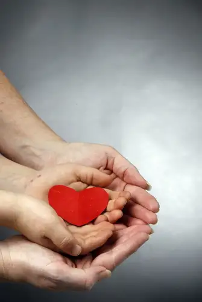

 |
| Two hands and a heart with Nick and Roxane/Carrie Snyder, The Forum |
{kind=link}
A couple weeks back, my hands, with my youngest son’s in them, debuted in our local newspaper.
The visual was used to depict a parenting technique called The Nurtured Heart approach. Ironically, I know a little of this approach and have found it works especially well with this particular child. The idea is that we get more mileage out of our kids by focusing on the positive. Nick needs lots of positive reinforcement. We all do.
But that’s all an aside to the reason I’m using that photo today. Today, it’s a symbol of what I’ve experienced, as a mother of five, since taking on a full-time job in January.
The job was going well, really. I was finding the work, the environment very stimulating and it felt like such a great fit in so many ways.
Except one way. My home life was experiencing some major bumps and those bumps were looking more like the Appalachian Mountains in light of my new schedule. Laundry wasn’t getting done and I was constantly having to shirk the kids’ requests. And certain things needing some urgent attention weren’t getting it.
At some point, the mountain range began to heave; I started to break. And so I approached my employer with my dilemma, and we began talking over what might be done to make things better.
During this time, I was on my blogging hiatus, so you missed it all. Let’s just say the hiatus was more necessary than I possibly could have known at the outset. But the news is good in the end. A compromise was reached, and I was invited to stay on at the newspaper under a new scenario — one that would allow me to tend to my family, do my work, and not crack in the process.
My new schedule began April 9 and the difference in pace was immediate. I was able to breathe once again. I no longer felt like I was drowning with no chance of a rescue.
Most of all, I feel like I’ve found my heart again. I’m able to do this awesome job of telling people’s stories on a regular basis, and still fully take part in my own story — the story of my life — without losing too much.
Sometimes, we need to give things a try. If they don’t turn out exactly as we’d envisioned, we might need to make adjustments. If we’re fortunate enough to be near people who recognize the possibilities, a new order can be created.
Today, I am very grateful for the new order in my life.
Q4U: When has Plan B been called forth in your life? What did you learn from going through the difficult part of reaching it?